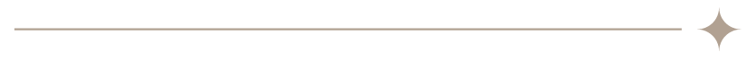

¿Qué proceso llevamos a cabo para un
proyecto de renderizado fotorrealista?

Recopilación de información
En esta fase recopilamos toda la información sobre el proyecto. Esto también incluye un Project Briefing donde establecemos la dirección visual de las imágenes y discutimos la iluminación y el estilo para que coincida con la ubicación del proyecto y el público objetivo.
Modelado 3D y ángulos de cámara
Después de modelar el proyecto, de acuerdo con el material proporcionado, proporcionaremos de 3 a 5 opciones de vista para cada imagen. Tendrás la oportunidad de elegir el ángulo que mejor represente el proyecto.
Vistas previas y revisiones
En la primera vista previa, nuestro cliente recibirá una imagen finalizada con iluminación, materiales y texturas. Después tendrá 2 rondas de revisiones para realizar los ajustes y finalizar la imagen.
Imágenes finales
Después de validar las revisiones se renderizarán todas las imágenes en alta resolución y se procederá con los ajustes de postproducción. Las imágenes finalizadas serán entregadas en los formatos: alta resolución JPG, web e impresión.
¿Quieres más información?
Contacta conmigo y hablaremos sobre tu proyecto mientras nos tomamos un café virtual